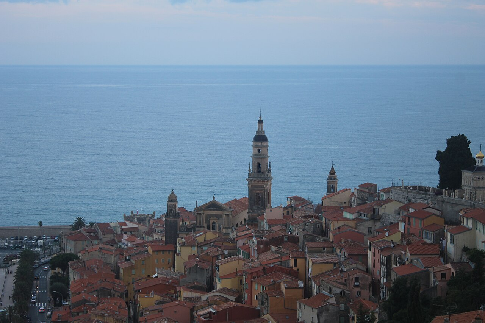
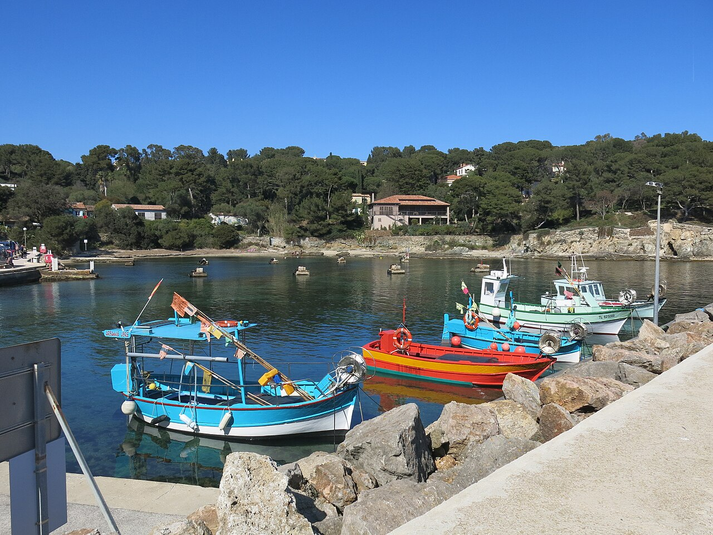
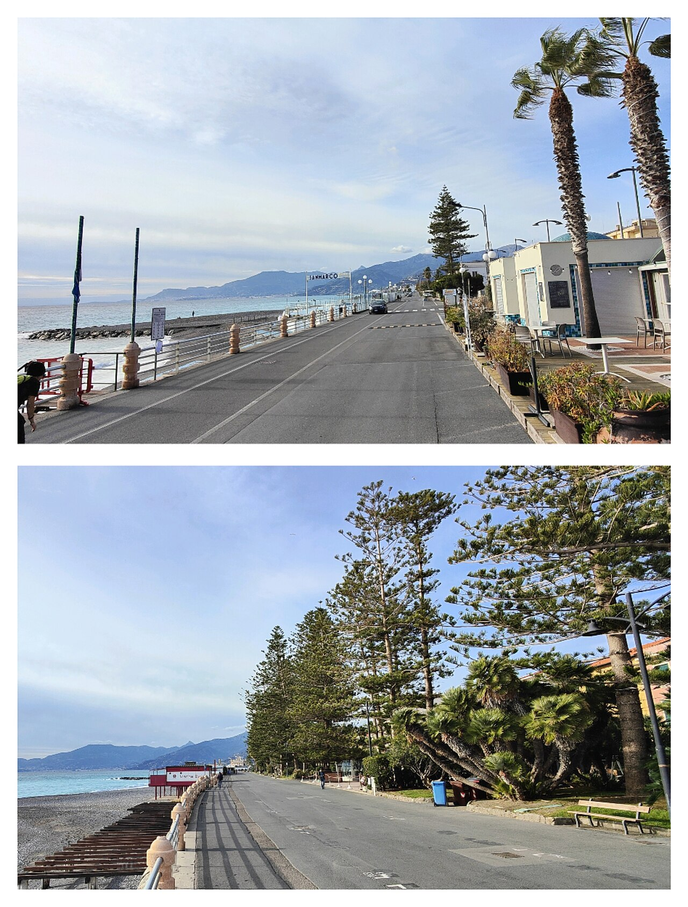
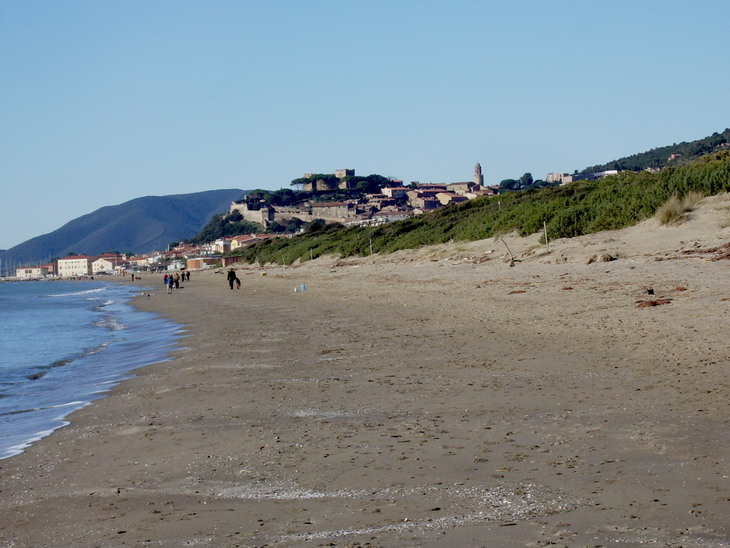
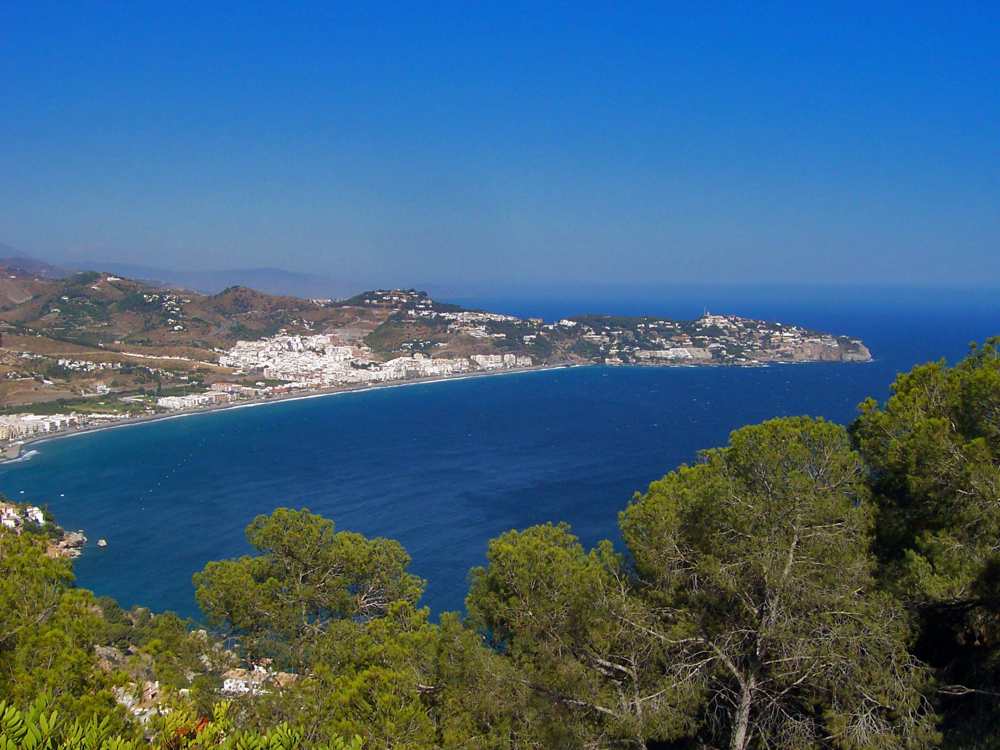
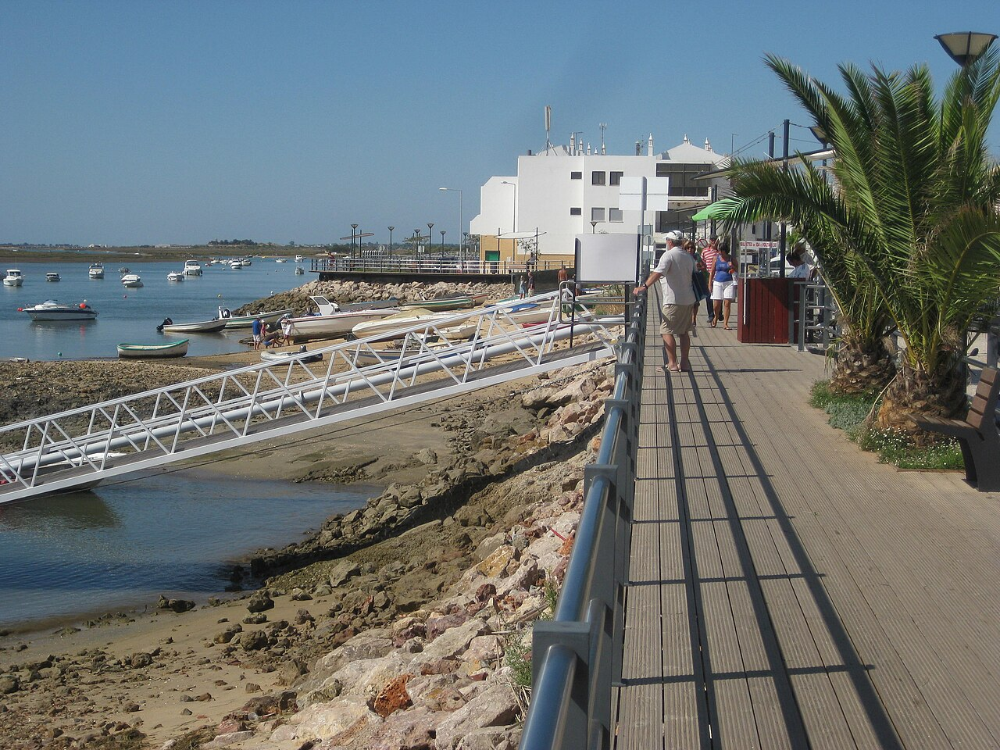
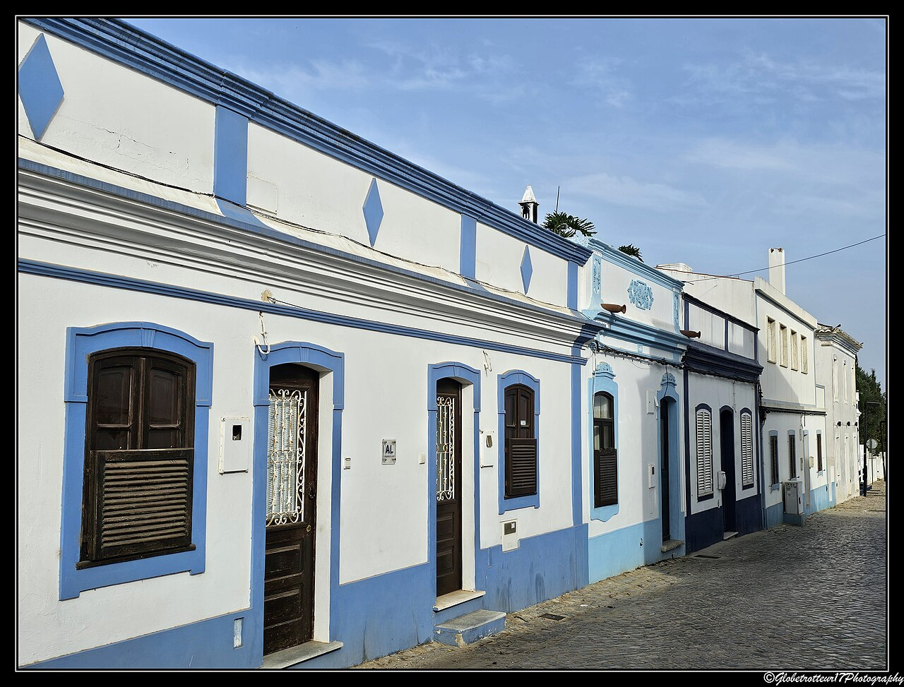
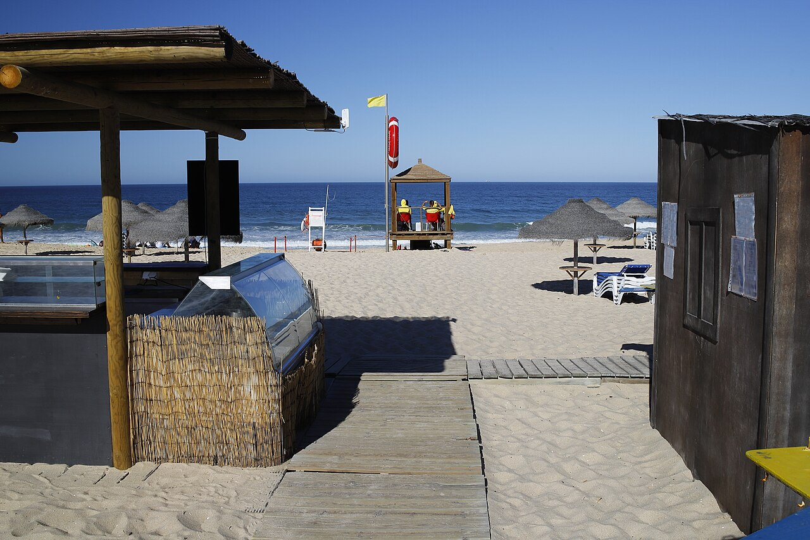
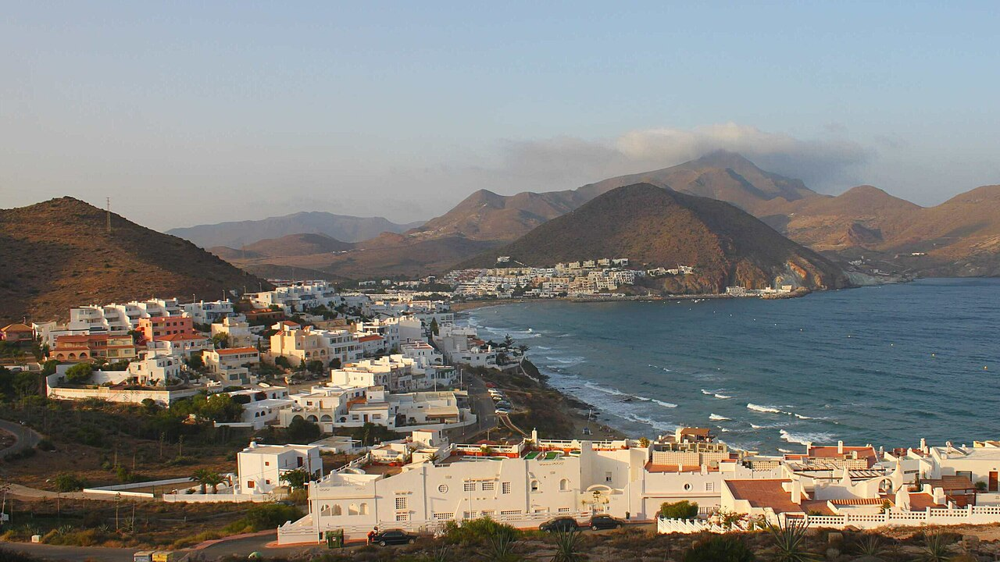

Coastal notesExpanded photo edition · 16 September 2026
New gallery edition:Read the latest winter coast guide for the revised Dénia / Altea atmosphere assessment, two-stay options and five photographs per region. This earlier report remains available for detailed sources and house leads; its joint top ranking for Altea and Dénia is superseded.
January & February · Spain · Portugal · France · Italy
Winter, by road.
Cap Ferret is the reference: understated surroundings, good restaurants, a town with its own life, and walks by the sea. This time, somewhere you can drive to.
Mainland onlyLocal characterCoast + dogsPrivate house + garden
Temperature still comes first. This expanded comparison asks whether Tuscany or another coast within roughly 20 hours of Coquelles can improve the choice. Attractive scenery is not enough if the winter afternoons are substantially colder.
New / The warmth-first comparison
Yes to more options. Tuscany comes with colder days.
Investigate Altea and Dénia next. Both are around 17 hours from Coquelles, and the Costa Blanca offers the strongest new regional temperature comparison. Tuscany is an easier drive, but its coastal references average only about 12–14°C by day in January and February.
What “20 hours” means: driving from the Coquelles LeShuttle terminal, excluding the UK journey, crossing, breaks and overnight stops. All eight new towns below fall inside that driving limit. None offers dependable 20–22°C winter days. Monthly average highs describe a typical daily maximum, not all-day warmth.
Daytime warmth first · official station normals, not forecasts
Area to consider
January high
February high
Reference and interpretation
Altea / Dénia
17.0°C
17.6°C
Alicante city, 1981–2010. Regional benchmark south of both towns; especially distant from Dénia. Their own monthly normals are not verified.
Menton
13.3°C
13.5°C
Nice, 1991–2020. Regional reference; no invented Menton microclimate bonus.
Grosseto, 1991–2020. Average lows 2.9 / 2.6°C: effective house heating matters.
Forte dei Marmi
11.5°C
12.6°C
Pisa, 1991–2020. Average lows 2.8 / 2.9°C. Weak fit when warmth leads.
Bordighera / Alassio
Separate monthly figures not verified
ARPAL winter context: December–February mean daily highs, 1961–2010 dataset: Sanremo 14.3°C, Imperia 13.0°C, Alassio 12.3°C. These are seasonal figures, not January or February normals.
Different stations, locations and normal periods prevent a precise town ranking. Do not choose between Spanish coasts over a few tenths of a degree. The much larger Spain–Tuscany gap is the useful signal. No frequency of 20°C days has been established.
Costa Blanca · Spain
Altea & Dénia
Strongest new investigationInternational coast
A narrow street in Altea's old town. 2007-03-11. Astronautilus / Commons, CC BY 2.0.Dénia harbour and castle at dusk. 2017-08-08 21:30:08. Pau Nofuentes Sendra / Commons, CC BY-SA 4.0.
Altea for its old-town setting; Dénia for food and a working town’s daily life. Both merit inspection before accepting Tuscany’s colder winter.
Altea: scene and coast
The hilltop old town gives Altea its appeal. This is an international residential and holiday coast near Benidorm, not a guaranteed escape from British visitors. La Olla mixes pebbles, rock and sand: it is not Cap Ferret’s broad Atlantic beach.
Dénia’s Marineta Cassiana promenade / Les Rotes route is a useful walking lead. The longer tower route is 5km each way, with climbing and some shared road. Dog beach access is seasonal and location-specific; Molins and the Molinell river mouth are prohibited year-round under the published notice. Altea’s La Olla has a designated dog section near Porto Senso. Check current signs and restraint rules.
House and atmosphere filter
Inspect Altea proper / La Olla and Dénia town edge / near Marineta Cassiana. Altea Hills, Altea la Vella and outer Les Rotes are not interchangeable with a walkable central base. A garden villa may lose the easy restaurant walk. Ca Joan is an Altea dining lead, with winter dates unverified. No qualifying rental or British visitor share has been established.
Verdict: put these two into the next house search. Alicante’s 17.0 / 17.6°C is a regional guide, particularly approximate for Dénia; it does not prove either town warmer than La Herradura.
Mediterranean France
Menton & Hyères / Giens
Shorter journeyAbout 13–14°C

Menton's old town and church above the Mediterranean. 2018-08-25 20:14:10. Prekmarg / Commons, CC BY-SA 4.0.

Port du Niel, Giens peninsula, in Hyères. 2017-03-30. Tangopaso / Commons, Public domain.
Menton: town life
An urban Franco-Italian Riviera option: seafront, old town and gardens rather than a pine-backed beach village. The tourist office lists Le Bistrot des Jardins as open all year, closed Mondays. It does not accept animals; this is evidence of winter dining, not a dog-friendly recommendation.
Hyères / Giens: landscape
The wooded peninsula, sandbars and saltmarshes are the stronger new French landscape analogy. Inland Hyères, the port / La Capte and Giens village are separate bases. L’Endroit advertises a year-round restaurant in coastal Hyères, not Giens village; its other beach services are seasonal.
Dogs and actual location
Menton’s 2026 municipal rules identify dog areas at Gorbio, Casino and Hawaï. Hyères permits dogs at Mérou beach, between Ayguade and Les Salins, separately from Giens. These do not establish access to every beach or protected coastal trail.
Verdict
Menton is the town-living hypothesis; Giens is the landscape hypothesis. Neither improves the measured warmth case. Garden houses, gradients and restaurant walks need property checks. No nationality mix has been verified; neither is promised British-free.
Liguria · Italy
Bordighera & Alassio
Italian RivieraWinter warmth compromise

Two waterfront views of Bordighera. The source is a two-panel collage. 9 December 2022 (according to Exif data). Al*from*Lig / Commons, CC BY-SA 4.0.Alassio beach at sunrise, with fishing boat and gulls. Taken on 16 October 2006, 08:23:08. Martina Rathgens / Commons, CC BY 2.0.
The scene
Bordighera’s Lungomare Argentina supports a lower-town waterfront routine with older Riviera character. Alassio is the denser sandy-beach town alternative. These are editorial scene comparisons, with no verified nationality percentages.
Verdict: plausible Italian alternatives around 12 hours from Coquelles. Retain for atmosphere and a shorter drive, not as demonstrated warmer alternatives to Spain. The seasonal climate context above is not a substitute for monthly town normals.
Tuscany · Italy
Castiglione & Forte dei Marmi
Within driving rangeToo cool for the priority

Castiglione della Pescaia from its eastern beach. Source supplies upload date, not confirmed capture date. 8 December 2008 (upload date). Petitverdot: Matteo Vinattieri / Commons, CC BY 3.0.Forte dei Marmi pier looking towards the mountains. 2021-09-09 09:12:15. Ingo Mehling / Commons, CC BY-SA 4.0.
Castiglione della Pescaia
A medieval seaside town with beaches and nearby pinewoods: the better Tuscan landscape match. Osteria di Mare Pane e Vino is a central seafood lead. Winter dining breadth and permitted dog routes remain unverified. Grosseto’s 12.8 / 13.7°C highs are the decisive drawback.
Verdict: Tuscany fits the drive, but I would not choose it for this January–February stay when temperature matters so much. Keep Castiglione for a warmer-season trip. Neither town has a verified garden-house, pet and walking match.
Eight additional towns inside the driving limit
Coquelles terminal → town centre · Google Maps, avoid ferries · 16 September 2026
Fastest current “Leave now” suggestions, tolls and highways allowed. Excludes crossing, UK leg and every stop. Allow staged driving days with dog breaks; check winter conditions and the actual rental route closer to departure. Earlier Spain / Portugal routes below are around 20–21 hours and exceed a strict 20-hour limit.
Earlier shortlist / Spain and Portugal
Two strong directions. Different compromises.
Original Spanish lead
La Herradura
Start here if walking to the actual sea is central to the stay. The bay and waterfront offer a more direct daily coastal routine than the Algarve’s lagoon towns.
The catch: attractive villas can sit above the village on steep slopes. A house advertised as “near the beach” still needs a real walking-route check. This is international coastal living, not a British-free village.
Tavira is the stronger starting point for town life and dining; Fuseta is the smaller waterfront alternative. Compare them rather than treating the entire Algarve as one resort scene.
The catch: Tavira is on a river, inland from the ocean beach. Lagoon-edge addresses and ferry piers do not fulfil an easy walk onto Atlantic sand.
Closest landscape/style comparison: Comporta and Carvalhal. Keep them in the report because the beach-and-pine setting speaks to the original brief. Their cooler climate and the separation between village, house and beach put them below the first two directions for this winter stay.
This ranking is a judgment about the whole brief, not a temperature league table. No town yet has a verified combination of house, garden, both-dog consent, winter availability and walkability. The property leads below show what is promising and what remains unresolved.
Original Iberian shortlist / Five areas
Choose the coast before the house.
Original schematic: locations approximate. Route links in the driving section recalculate the actual journey.
Best coastal-routine leadLa Herradura, with Almuñécar as the larger-town comparison.
Best Portuguese town-life leadTavira; compare Fuseta for a smaller waterfront base and Cacela Velha for scenery.
Drier-climate alternativeAgua Amarga / San José in Cabo de Gata. Investigate winter opening and wind exposure.
Atlantic beach-and-garden alternativeConil / Roche and Zahara. House supply can be promising; walking to restaurants is a separate test.
03 / The daytime temperatures
Mild winter. Occasional warmth. No promise of 22°C.
Average daily maximum air temperature. The shaded band marks the original 20–22°C preference. Select a month to compare the same five reference stations.
FaroEastern Algarve reference
16.3°
SinesAlentejo coast comparison
14.9°
Málaga AirportSouth-coast benchmark
16.8°
Almería AirportCabo de Gata region
16.9°
CádizAtlantic Andalucía
16.0°
0°C10°C20°C30°C
Official normals: Portugal 1991–2020; Spain 1981–2010. Different periods and station locations mean differences of a few tenths of a degree should not decide the destination.
January / February · official regional observations and published normals
Portugal stays in contention. Faro is only modestly cooler than the southern Spanish airport references. Almería’s substantially lower rainfall is a more meaningful distinction than its tiny temperature difference from Málaga.
Comporta is the bigger weather compromise. The Sines reference is cooler and wetter than Faro. It is a coastal Alentejo comparison, farther south and at 98m elevation—not a measured Comporta microclimate.
What they cannot tell us
Málaga is not a La Herradura or Almuñécar station. “Costa Tropical” does not establish 20–22°C most afternoons. None of the station figures proves the weather at a particular villa.
Sun and shelter can improve comfort; wind and shade can undo it. No percentage of days above 20°C has been calculated. Heating and a sunny, sheltered garden matter for a long winter stay.
Daily sunshine equivalents divide January totals by 31 and February totals by 28. They describe bright sunshine, not daylight or a forecast. IPMA identifies its Faro/Sines normals as hybrid series combining observations, modelled data and homogenisation. Sources were verified on 15 September 2026.
04 / What living there might feel like
The towns, and the reasons to hesitate.
The preference is for an understated local setting with cosmopolitan dining, avoiding a dominant British resort scene or conspicuous luxury enclave. “International” does not automatically mean a poor fit; equally, no place is presented as having zero British residents or visitors. Scene assessments below are judgments, not measured nationality shares.
01
Costa Tropical · Granada · Spain
La Herradura
First coastal-base leadHouse unresolved

La Herradura from Cerro Gordo, July 2007. Emilio Morales Barbero / Wikimedia Commons, public domain. Historic summer landscape photograph; not winter-weather evidence.
Almuñécar coast from the air. 2021-04-03 12:32:48. kallerna / Commons, CC BY-SA 4.0.
The clearest place to test a simple routine: walk beside the bay, eat in the village, and drive only when you choose to explore.
The scene / British influence
Our judgment: the lived-in waterfront is a better starting point for this brief than a luxury-resort enclave. There is international residential appeal, so it would be wrong to describe it as free of British influence. Choose the village on its own merits and inspect the immediate street.
Daytime temperature
16.8°C January / 17.7°C February at Málaga Airport, a south-coast benchmark only. No verified La Herradura normal establishes a warmer numerical “microclimate bonus”.
Coast & walking
The municipal guide records an urban beach about 2.05km long, of dark sand and gravel, along Paseo Andrés Segovia. That gives a convincing coast-and-dining layout. It is a Mediterranean bay rather than Cap Ferret’s dunes and wooded peninsula.
Dogs: a supported everyday walk
Use the promenade at Monumento a los Hombres del Mar, then public old-town streets towards Iglesia San José, Calle Las Flores and Calle Príncipe. The official town walk and municipal ordinance, articles 9–10, support a leashed public-street outing with waste collection. This is an inference from route and rules, not a designated dog trail. Stay outside buildings; no step-free route or winter beach permission is claimed.
Food & winter life
The municipal directory identifies Mesón Gala La Herradura on Paseo Andrés Segovia and vegetarian Estamos sembrados at number 17. A municipal brochure describes January gastronomy activity, supporting winter-life potential; exact 2027 restaurant opening dates remain unverified.
House + garden reality
No qualifying house is established. One Los Altos villa genuinely has a private garden, but forbids pets and places the beach 2.8km away. A Cantarriján villa is a different location. Neither should be sold as an easy village-base solution.
Compare Almuñécar separately: investigate its larger-town setting if a broader dining circuit matters more than a compact bay. El Chaleco is there, on Avenida de la Costa del Sol 37. It is not a restaurant in La Herradura, and houses in the two towns are not interchangeable.
Tavira, April 2014. Dmitry Tonkonog / Wikimedia Commons, CC BY-SA 3.0. Responsive display crop under the same licence. Illustrative landscape, not winter conditions.

Cabanas de Tavira waterfront boardwalk. Taken on 18 September 2011. James Castle / Commons, CC BY-SA 3.0.
The Portuguese starting point for attractive streets, an ordinary working town and good food. Its main compromise is geographical.
The scene / British influence
Historic streets, the Gilão waterfront, market and seafood tradition support a local-town recommendation. Our judgment favours this urban character over a resort strip. International visitors and residents are part of the setting; a low British population share has not been verified.
Daytime temperature
16.3°C January / 17.0°C February at Faro. A useful eastern Algarve reference, not Tavira-specific observations. Expect cool evenings and check the house’s heating.
Coast & walking
Tavira town is not on the Atlantic beach. Its everyday walking is by the river and through the town. Ilha de Tavira lies across the Ria Formosa; the official guide describes boat access. A riverfront house does not provide a 15-minute walk onto ocean sand.
Dogs: riverfront and lagoon walks
For Tavira, use public streets along the central Gilão and old bridge. In Cabanas, the council guide recommends the mainland waterfront. Paired with municipal animal rules, these support accompanied, leashed outings with identification and waste collection; additional restraint rules can apply. This does not extend permission to island beaches, boats, saltpans or protected dunes.
Food & winter life
Come na Gaveta, Avenida Dr. Mateus Teixeira de Azevedo 36, is a concrete dining lead. Its own site promotes a continuing operation, but that is not a confirmed January–February 2027 opening calendar. Tavira is the stronger town-life hypothesis in the Portuguese shortlist.
House + garden reality
The most concrete nearby house lead is in Cabanas de Tavira, not Tavira centre. Casa Monte Velho advertises a garden, pet-friendly accommodation and a three-minute walk to the pier and restaurants. It remains a lagoon-side location with boat access to the ocean beach.
Best fit if: riverfront town life is an acceptable substitute for living on the sea. If walking beside the open coast every day is essential, prioritise La Herradura or investigate Fuseta’s actual mainland waterfront carefully.
Small boats on Fuseta's lagoon waterfront. 2023-05-06. SaffronOak / Commons, CC BY-SA 4.0.

Blue-and-white village houses, Cacela Velha. 2024-10-06 09:48. Globetrotteur17... Ici, là-bas ou ailleurs... from La Rochelle, FRANCE / Commons, CC BY-SA 2.0.
Two places to inspect from an eastern Algarve base, with different prospects for staying all winter.
Fuseta: the working-town option
Our judgment: a simpler fishing-town proposition, with less polished sophistication than the Cap Ferret reference. The mainland lagoon frontage and the Atlantic island beach are different experiences; the latter involves a boat. Maresia, Avenida 25 de Abril 2, is a verified local restaurant lead. A January 2026 customer review reports dining there—limited winter evidence, not an owner commitment for next winter.
Cacela Velha: scenery first
The official profile describes white houses and a fortress above Ria Formosa, with beach boats from nearby Fábrica. It is an appealing outing, but the evidence for a broad winter restaurant circuit is weak. Casa da Igreja is in the village; winter opening is unconfirmed.
Temperature & scene
Both use the Faro reference: 16.3 / 17.0°C January/February highs. Their small scale does not prove an absence of British visitors or expat influence. Fuseta merits a base inspection; Cacela Velha currently ranks as a day-trip prospect.
House & dog-walking test
No qualifying garden house was verified in either village. Establish a useful mainland walking loop first, rather than relying on boat trips or access across the protected shore. Restaurants, beach boats and permissions all need a winter-specific check.
Praia da Comporta, June 2024. Contriblambda / Wikimedia Commons, CC0. Summer landscape illustration; not winter-weather evidence.

Beach entrance at Praia do Carvalhal, Grândola. 2020-08-22 09:37. José Prego from Moura, Portugal / Commons, CC BY 2.0.
The strongest pine-and-sand comparison to Cap Ferret. An attractive style reference, but a more difficult winter-base recommendation.
The scene / British influence
The official beach profile supports long sand, dune vegetation, pine forest and the protected estuary setting. Our judgment: this is the closest physical analogy. A fashionable villa destination can also bring the conspicuous-luxury atmosphere the brief dislikes; inspect the specific village and house rather than relying on “Hamptons” marketing.
Daytime temperature
14.9°C January / 15.6°C February at Sines. This is a coastal Alentejo comparison farther south, not a Comporta station. It is enough to treat this region as a larger warmth compromise; it is not an exact local forecast.
Coast & walking
Beaches and pine landscapes fit the desired scenery, but village, villa and beach may be separate locations. A house in Brejos da Carregueira cannot be assumed walkable to Comporta or Carvalhal restaurants. Protected dunes and private tracks need access checks.
Food & winter life
Dona Bia is a concrete restaurant lead on the N261, not evidence of dinner within a village stroll. A sufficiently varied winter circuit has not been established. Do not assume either complete closure or full summer-style choice.
House + garden reality
Casa do Meio in Brejos advertises a garden, pool, bicycles and pets allowed. That supports house supply, not the all-important walk to restaurants and sea. No winter monthly quote or complete location fit was verified.
Who it suits
Someone willing to trade some warmth and daily convenience for landscape. For this brief it belongs behind the two leading directions until a walkable house and dependable winter dining are demonstrated.
Agua Amarga village and bay. Taken on 13 May 2008. isol / Commons, CC BY-SA 3.0.

San José, Níjar, on the Cabo de Gata coast. 2011-08-20. Benreis / Commons, CC BY-SA 3.0.
The reserve direction for rugged coast and a quieter village scale. Its strongest measured advantage is low rainfall.
The scene / British influence
Our judgment: these are scenery-led alternatives to investigate, with a different feel from pine-backed Atlantic villages. Quietness does not establish a cosmopolitan dining scene or a particular nationality mix. Do not infer either from attractive photographs.
Daytime temperature
16.9°C January / 17.6°C February at Almería Airport. Rainfall averages 24 / 25mm, below most of the earlier reference stations. The figures do not establish wind shelter at a particular cove.
Choose the actual village
Agua Amarga and San José are separate bases. La Villa, Carretera Carboneras 18, is in Agua Amarga, offering seasonal Mediterranean cooking and a planted terrace. Its published “remainder of the season” hours do not explicitly include January/February. 4nudos is at the Club Náutico in San José; its winter schedule is also unverified.
House, dogs & winter routine
No qualifying house with garden and easy dining/coast access was established. Protected-coast dog access and usable everyday routes need verification. Keep this below the leading towns until winter restaurant activity and a practical rental are demonstrated.
06
Costa de la Luz · Cádiz · Spain
Conil & Roche
Atlantic sand & pinewoodsHouse / dining split
Conil de la Frontera town panorama. 2011-05-11. Aconcagua (talk) / Commons, CC BY-SA 3.0.The coves and cliffs of Roche, Conil. 2018-01-01 15:04:47. PEPE GADEIRAS / Commons, CC BY-SA 4.0.
A persuasive landscape alternative. The best place for a garden villa may be different from the best place to walk out for dinner.
The scene / British influence
Our judgment favours Conil town for an ordinary Spanish-town routine and Roche for the villa-and-pinewood setting. A private residential area is not automatically the desired village atmosphere. No British visitor or resident share was verified.
Daytime temperature
16.0°C January / 16.8°C February at Cádiz, a regional Atlantic reference. Wind exposure and rain can matter more to comfort than a small change in average temperature. Choose a sheltered outdoor area.
Food & winter life
Francisco Fontanilla at El Roqueo is a specific Conil restaurant lead. Its published kitchen schedule currently excludes Tuesdays, but annual winter closure dates remain unconfirmed. The distance from a Roche villa to an open restaurant still needs measuring.
Coast & dogs: important conditions
The council describes a public promenade by Los Bateles and Chorrillo. Its beach ordinance, articles 4 and 17, permits animals on urban beaches outside the 1 May–31 October season; natural beaches remain prohibited year-round without authorisation. Its animal ordinance, article 12, requires dogs over 20kg to wear a muzzle and use a resistant non-extending lead, handled by a capable adult. Check current signs, seasonal amendments and exact urban-beach boundaries.
House + garden reality
El Mirlito / The Bluebird in Roche advertises a private garden, pets and a short beach walk. Restaurant walkability and enclosure remain unverified. A fenced rural alternative was rejected because its restaurants are 4km away and beach access is by car.
Best use of this lead
Compare a house at Conil’s town edge against Roche, with the winter restaurant walk as a deciding test. The council classifies Castilnovo as a natural beach, so it is not a supported winter dog-beach recommendation. Dog clauses were verified in the search index of the council’s PDFs; direct PDF download failed. Do not generalise these rules to Zahara or all Cádiz beaches.
The broad beach at Zahara de los Atunes. 2015-11-06 17:35. Luis Rogelio HM / Commons, CC BY-SA 2.0.
A sandy-beach alternative worth retaining because a town-edge house could reconcile coast, garden and restaurants.
The scene & winter food
Our judgment: a plausible Spanish seaside-town alternative, not a proven winter equivalent of Cap Ferret. Pradillo, Paseo del Pradillo 65, has a regional-tourism schedule covering January–December 2026, excluding Mondays/public holidays. That is real winter-operation evidence, but does not confirm 2027 dates or the whole town’s restaurant choice.
Temperature & coast
Use the Cádiz reference: 16.0 / 16.8°C January/February highs. Treat wind shelter as a house-level requirement. Local beach and dog-access rules must be checked separately from the accommodation’s pet policy.
House + garden reality
A semi-detached listing advertises a 120m² “garden terrace”, pets and a 300–400m walk to village/beach/restaurants. The platform labels the area Tarifa, so the exact pin needs reconciliation. “Garden terrace” could be paved; it is not verified lawn or secure enclosure.
Position in the shortlist
Keep as a practical house lead, especially if the open Atlantic beach matters more than the Mediterranean bay. Do not commit for two months until the immediate winter dining circuit and the actual property location are clear.
These are advertised properties, not confirmed availability or recommendations to book. No verified monthly winter price was available in the reviewed listings. “Pets allowed” does not establish consent for two dogs including a large dog; that needs written agreement. Nothing has been booked and no owner has been contacted.
What the listing actually establishes—and the missing conditions
Pets allowed; 120m² garden terrace/pergola; owner claims village 300m and coast/restaurants 300–400m.
Exact location and walking routes unverified. Outdoor surface/enclosure unknown. No reviews when inspected.
No verified monthly quote or winter availability.
Casa do MeioBrejos da Carregueira de Cima · 4 bedrooms
Garden, private pool, bicycles and pets allowed; between Comporta and Carvalhal.
House style is promising; a short walk to restaurants and ocean is unproven. Do not substitute cycling for walking.
No verified monthly quote or winter availability.
Two useful rejections:Las Calas de Roche allows up to three pets and has a fenced garden, but restaurants are 4km away and the beach is a ten-minute drive. Los Altos, La Herradura has a private garden but forbids pets and puts the beach 2.8km away. Attractive features do not override essential requirements.
The next enquiry should establish: exact address; a genuine roughly 15-minute walk to open restaurants and coast, including gradient and pavement; exclusive garden and secure boundaries; both dogs accepted inside; effective heating; sunny sheltered outdoor space; total long-stay price, utilities and cancellation terms. A patio, shared lawn, roof terrace or distant village is not silently accepted as a substitute.
06 / The road journey
A long drive. A much simpler destination choice.
These earlier five area references are reachable overland, but all measured slightly above a strict 20-hour limit. The comparison below uses the same starting point: the LeShuttle terminal at Coquelles. It does not include the UK leg or Channel crossing.
Google Maps · driving, avoid ferries · checked 15 September 2026
These were the current fastest suggestions with tolls/highways allowed and ferries excluded, using “Leave now”. Some other shorter-distance routes took longer. They are not January traffic predictions and exclude dog stops, charging/fuel, food, sleep and check-in. Road closures and route choices can change. Town centres are comparison points, not exact rental addresses.
Allow three driving days
As a planning recommendation, split roughly 20–21 hours behind the wheel into three days from northern France, with two overnight stops and regular dog breaks. Four days would be gentler. Add the UK/Channel journey separately.
Pick stopovers after choosing the destination: the sensible corridor to Portugal differs from the eastern-Spain approach to Cabo de Gata. No stopover rooms, toll totals or travel costs have been quoted here.
The house is now the main filter
The long mainland-to-island ferry and its pet-cabin limits no longer govern the choice. Ordinary cross-border pet documentation still needs a current check before travel.
Next order of work: inspect Altea and Dénia alongside La Herradura, retaining the eastern Algarve for comparison; establish an exact house and daily walking routine; obtain winter operating and pet confirmations; then build the staged drive.
07 / Evidence and limits
What this report is based on.
Verified evidence
Official AEMET, IPMA, Météo-France, LaMMA and ARPAL climate tables; municipal and national tourism descriptions; identified restaurant locations and published operating information; current property descriptions; Google Maps driving results. Direct source links sit beside the claims they support.
Photographs were checked against Wikimedia Commons author and licence records. They illustrate landscape and urban form; dates vary, including some winter photographs. They are not evidence of typical January–February conditions.
Judgments and open questions
Rankings and “Cap Ferret feel” are editorial assessments. No reliable town-level British visitor share, exact future restaurant calendar, January weather forecast, full house match or complete property-level walking assessment was established.
The mainland brief accepts cooler afternoons. Marbella remains excluded by preference. The Canaries and Morocco are outside this overland comparison; they have not been replaced by another unrequested island trip.
Original research 15 September; expanded comparison and photographs 16 September 2026. Climate periods are shown explicitly. Restaurant evidence dated 2026 is labelled accordingly; it is not promoted to a 2027 guarantee. Accommodation listings are leads only, with no verified monthly price or availability. Photograph credits and licences.


{kind=link}
{kind=link}
.jpg){kind=link}
.jpg){kind=link}
{kind=link}
{kind=link}
{kind=link}
{kind=link}
{kind=link}
{kind=link}
{kind=link}
{kind=link}
{kind=link}
.jpg){kind=link}
{kind=link}
.jpg){kind=link}
{kind=link}
.jpg){kind=link}
{kind=link}
{kind=link}
.jpg){kind=link}